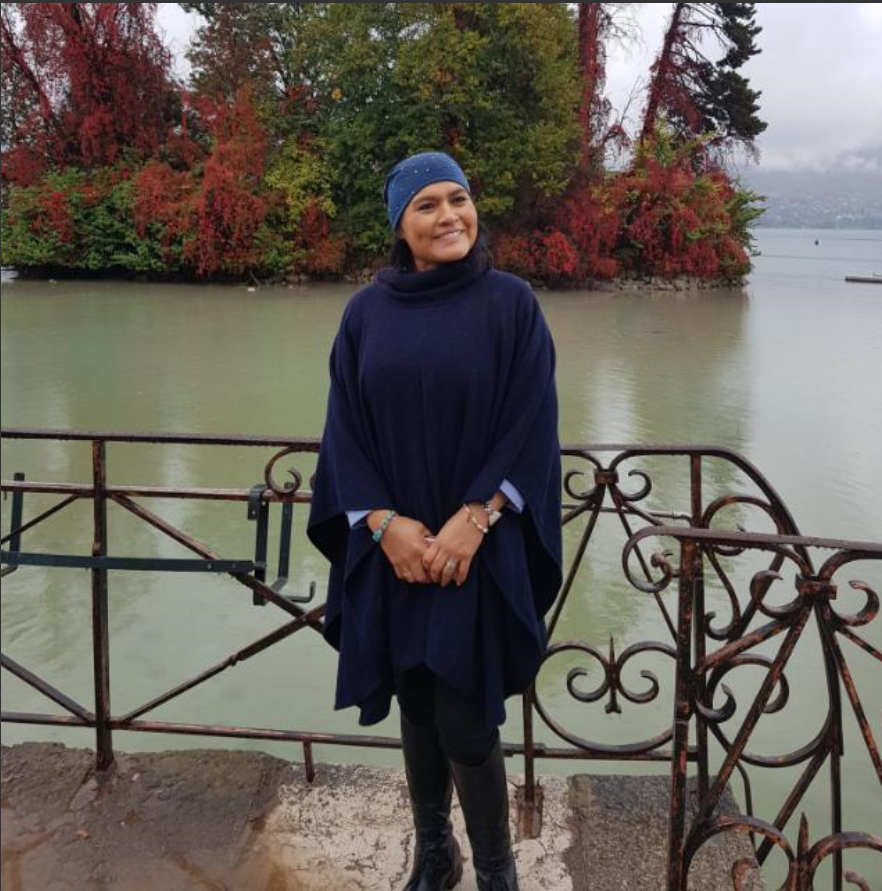

BAR CAFETERIA DON EDUARDO
Un lugar al que le gustara volver.
HISTORIA:
Ya con 8 años de funcionamiento tratamos de mejorar nuestros servicios día a día para dar la mejor atención a nuestros clientes. Somos un lugar construido con cariño y compromiso de dar el mejor servicio y ambiente para ustedes que nos visiten.
Somos un lugar donde pasar un momento divertido con amigos y familiares donde se sentirán en un ambiente acogedor y divertido y sobre todo seguro.
Somos un establecimiento donde encontrarán diversión para toda la familia, para los adultos tenemos el área donde pueden compartir un momento de charla mientras comparten una bebida de nuestra carta, o para los jóvenes pueden pasar un momento divertido en la pista de baile sacando a relucir los pasos prohibidos, y sin olvidarnos de los más pequeños también contamos con juegos de mesa para que se puedan divertir mientras degustan la comida o postres de nuestro menú.
Tenemos platillos tradicionales de nuestro país Ecuador, además de tener platillos extranjeros de la gastronomía europea de mano de nuestra jefa y cocinera GLORIA ANTONIETA MASACHE CEVALLOS.
